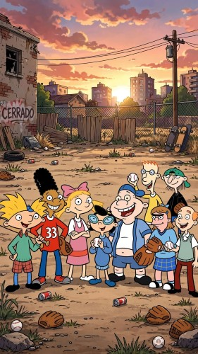
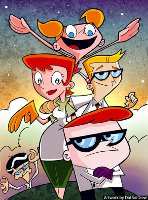
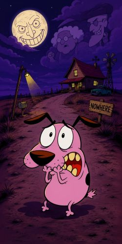
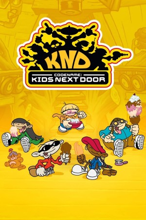
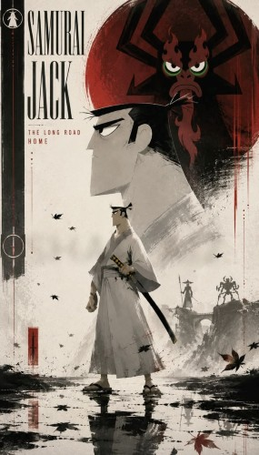
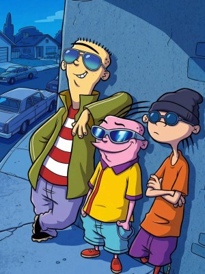

Reviviendo las caricaturas clásicas de tu infancia
Entre 1990 y 2010 surgieron caricaturas que marcaron generaciones. Este sitio es un homenaje visual a esa época dorada.

Hey Arnold!
Un grupo de amigos viviendo aventuras en la ciudad, con Arnold como protagonista.
Ver más
Dexter’s Laboratory
El niño genio con su laboratorio secreto y su hermana Dee Dee causando caos.
Ver más
Courage the Cowardly Dog
El perro tímido que enfrenta monstruos y situaciones extrañas para proteger a su familia.
Ver más
Los Chicos del Barrio
Cinco niños que forman una organización secreta para luchar contra los adultos y sus reglas.
Ver más
Samurai Jack
Jack, un guerrero samurai del futuro, lucha contra hordas de enemigos en un mundo postapocalíptico.
Ver más
Ed, Edd n Eddy
Tres amigos con planes disparatados para conseguir caramelos en su vecindario.
Ver másExplora más
Caricaturas de los 90
La década de los 90 fue una época dorada para la animación. Series como Hey Arnold! y Dexter’s Laboratory mezclaban humor, creatividad y personajes entrañables que aún hoy son recordados con nostalgia. Estas caricaturas marcaron el inicio de un estilo único que definió la infancia de millones de personas.
Ver másCaricaturas de los 2000
Los 2000 trajeron un aire fresco con producciones como Los Chicos del Barrio y Samurai Jack. Estas series exploraron mundos más complejos, con historias llenas de acción, aventuras y un estilo visual innovador. Representaron una evolución en la animación que conectó con nuevas generaciones y expandió la imaginación de los espectadores.
Ver másCuriosidades
Detrás de cada caricatura hay secretos y detalles curiosos: personajes que casi no existieron, episodios censurados y referencias ocultas que solo los más atentos descubrieron. Explorar estas curiosidades es revivir la magia de la animación y entender cómo estas historias lograron trascender más allá de la pantalla.
Ver más